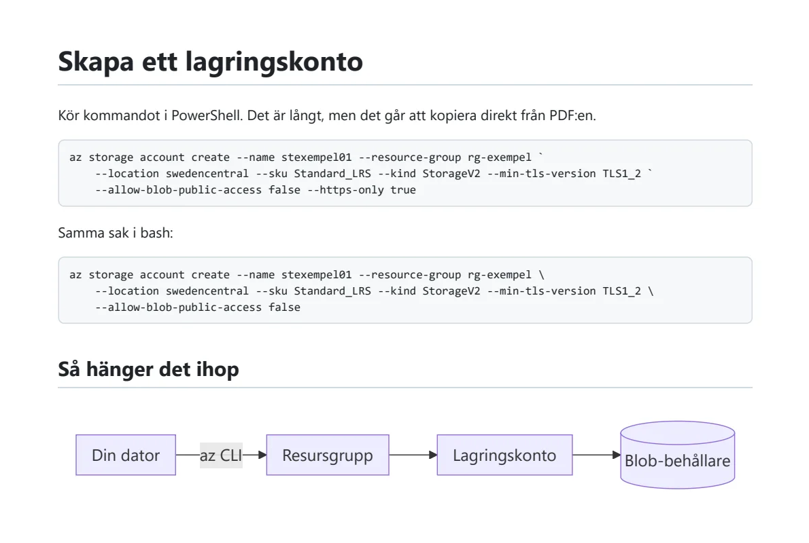

← All projectsOpen source
06 / 06
Markdown to Copyable PDF
A VS Code extension that turns Markdown into PDF.
06 / 06
A VS Code extension that turns Markdown into PDF.
Most tools that turn Markdown into PDF break long commands at the page edge. When you copy the command, the line break comes along and the terminal runs half a command.
I needed PDFs where commands can be copied and pasted without breaking, so I built an extension where every code line can be copied exactly as written.
